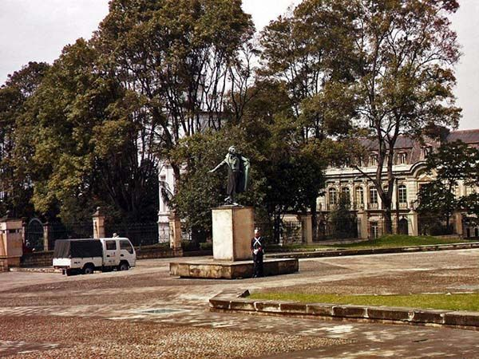
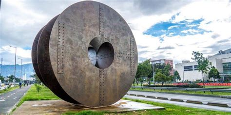
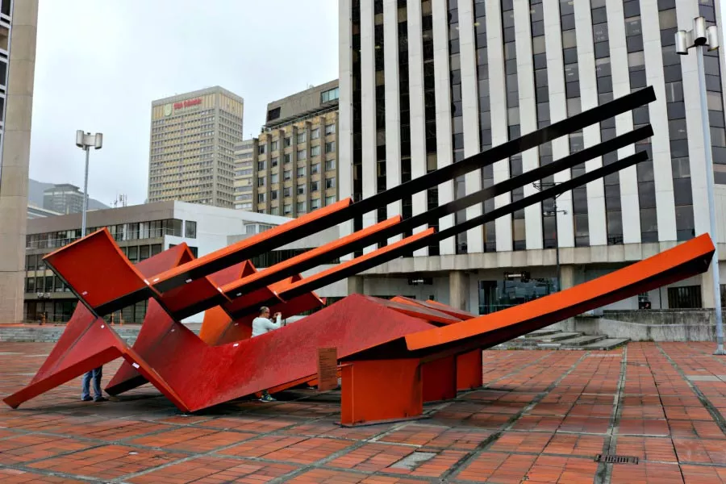

En el módulo vamos a ver la historia del Arte, pasando de la prehistoria, Edad Antigua, Media, Moderna y Contemporanea.
PreHistoria
En la Prehistoria se tenia muy pocos materiales y formas para representar el Arte, teniendo solo pinturas ruprestes posiblemente
hechas con sangre y diferentes materiales. Aunque se podría mencionar también a diferentes instrumentos musicales con
cuernos y diferentes partes de animales.
Edad Antigua
Es una epoca de la historia muy importante ya que se exploro y descubrio varias cosas, pasando desde escrituras, poesia,
pinturas, arquitectura y demás. Esto fue gracias a el surgimiendo de varias sociedades cómo la Griega, Egipta, Mesopotamica y Romana.
Edad Media
Es una epoca en el que la Iglesia y gerarquía social tenía mucha importancia, tomando estilos cómo el Gotico, pero era muy restringido y
limitado en expreción por las restricciones que se tenía en la epoca por la Iglesia.
Edad Moderna
Era principalmente caracterizada en su arte por el Renacimiento, en el que se tomo las tendencias de la Edad Antigua. Se tomo muchas
libertades a diferencia de la epoca anterior.
Edad Contemporanea
Es una era muy lleva de variados tipos de arte, retomando influencias de las epocas anteriores. Y también influenciado por los
diferentes problemas sociales ocurridos en esta epoca.
1ra Actividad del Módulo
| Curso |
1003 Jornada Tarde |
Estudiante |
Martín Steven Hernández Ortiz |
| No. de Documento |
1.013.107.870 |
Telefono |
313 3391259 |
| Correo Electronico |
martinstevenhernandezortiz@gmail.com |
Fecha de Entrega |
|
¿Cuáles movimientos Artisticos del siglo XX, identificas en la línea del tiempo de la historia del Arte?
-
Dadaísmo: Es un tipo de arte de la mitad del siglo XX. Que intenta irrespetar y criticar casí todo
sentido del arte.
-
Expresionismo: Es un tipo de arte de inicios del siglo XX. Que intenta distorcionar la realidad en su
arte.
-
Surrealismo: Es un tipo de arte de inicios del siglo XX. Que se basa mucho en la fantasía, locura y recreacción automática.
-
Arte Abstracto: Es un tipo de arte de inicios del siglo XX en Rusia. Que intenta crear una realidad a partir de objetos
identificables con otros objetos reconocibles.
Estos son algunos de estos.
Investiga que es el Arte Contemporaneo
Es un tipo de arte que empezó a sugir fuertemente despues de la Segunda Guerra Mundial. Abarcando a muchos y variados
tipos de arte, tomando mucha inovación en el Arte a comparación de el arte de las epocas pasadas.
El Arte Contemporaneo indica que el arte esta fuerte enlazado con nuestras vidas, realidades y en el mundo que vivimos.
Volviendose un intercambio de pensamientos, sentimientos y demás estados entre el artista y el espectador. Este arte ha tomando
más imagen de preguntas, desorden y incoherencia de la vida que un objeto u imagen al que apreciar. Dejando en claro que
el mensaje es más importante que cómo se represento.
Esto también ayudo a romper demaciados esquemas y reglas del arte en nuestra sociedad en la flamante busqueda de la inovación.
Algunos de los tipos de Arte Contemporaneo son:
- Fauvismo
- Cubismo
- Expresionismo
- Dadaísmo
- Surrealismo
- Arte Abstracto
Algunos de sus representantes eran:
- Jeff Koons
- Yayoi Kusama
- Damien Hirst
- Yoko Ono
¿Cuales son las caracteristicas del Arte Contemporáneo?
-
Esta basado en el Expresionismo Abstracto.
-
Busca de diferentes formas de expreción.
-
Obras originales, artisticas y se deja marcada la huella personal del artista en la obra.
-
Se desarrollan las obras con diferentes tecnologías, desde herramientas sencillas usadas en actividades complejas, hasta
herramientas complejas usadas en actividades sencillas.
-
Fuerte enfoque a las expresiones del Yo y a las emociones.
-
Colores fuertes y un contenido simbólico.
Investiga: ¿Qué es una Escultura?
Es una forma de representar el arte, siendo una diciplina artistica muy vieja tomando inicios desde nuestros propios inicios cómo
seres humanos. Esta puede retratar una imagen, persona, evento o sentimiento, cómo cualquier forma del arte. Pero lo interesante y unico
de esta forma es el poder retratarlo en cualquier material con cualquier herramienta.
Algunos de los materiales más comunes en sus inicios era piedras & huesos. Pero en el avance de la historia se empezo a tomar otros
materiales más durables cómo el barro, madera, bronce, oro. Y en fechas muy modernas, se empezó a usar diferentes técnicas más avanzadas para
crear las estatuas. Cómo las laminas y partes modulares de la Estatua de la Libertad en Estados Unidos.
Y en díasa más modernos inclusive los mismos materiales que se usan en las esculturas pueden dar un mensaje, cómo son los materiales
reciclados o "basura", que da el mensaje de la polución en la tierra.
¿Cuales Esculturas hay en Bogotá? Nombra 5 de estas, escribe su historia y artista autor.
- Antonio Nariño - León Greber.
- El Eclipse - Ángela Gurría Davó.
- Pierna - Jorge Hanna.
- Nave Espacial - Eduardo Ramírez.
- Viajero - Antonio Seguí.
Antonio Nariño
Antonio Nariño, precursor de la Idependencia y gobernante tras conseguirla. Su estatua retrata cuando salió en un balcon ante una
gran cantidad de pastusos que pedían su cabeza, cuando fue prisionero en Pasto. Fue hecha por León Greber.

Estatua de Antonio Nariño. Greber.
El Eclipse
Es una escultura donada por la artista Ángela Gurría Davó en 1992 para la inaguración del Museo Vial de la Avenida El Dorado. Fue hecha por
Ángela Gurria Davó.

El Eclipse. Gurria Davó.
Pierna
Es una escultura en honor a Fanny Mikey, hecha por su compañero Jorge Hanna.
Nave Espacial
Es una escultura que pesa 25 toneladas, hecha de láminas de hierro. Aúnque no tiene mucha forma de nave espacial, es cuestión
de perspectiva. Hecha por Eduardo Ramírez Villamizar.

Nave Espacial. Ramírez Villamizar.
Viajero
Es una escultura que nos intenta dar un mensaje subliminal que nos dice que siempre vivimos corriendo & que del afán no queda
sino la oxidación. Hecha por Antonio Seguí.